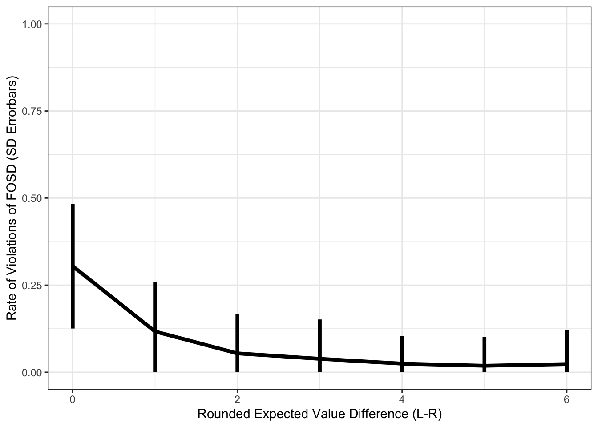

Chapter 10 Multi-Agent Simulations
10.1 Distributions of agents
Suppose we have N agents who make decisions using DDM. Draw their parameters from some reasonable distribution, given previous literature. I’ll work off of my last paper (Eum et al. 2023).
This may take a few seconds to a minute depending on your computer.
N = 100
multi_agent = data.frame()
for (n in 1:N) {
# Together, the drift rate and noise determine signal-to-noise ratio in this decision process.
d = runif(1, min=0.0001, max=0.009) # drift rate
s = runif(1, min=0.01, max=0.09) # noise
agent_n = data.frame()
for (i in 1:length(evidence)) { # Evidence vector is same as in above cells.
single_trial = simulate_ddm(evidence[i], d=d, s=s) %>% data.frame()
single_trial$evidence = evidence[i]
agent_n = bind_rows(agent_n, single_trial)
}
# Some cleaning
agent_n$n = n
agent_n$rnd_evid = agent_n$evidence %>% round()
agent_n$error = ifelse(agent_n$choice==1, 0, 1)
# Combine into placeholder
multi_agent = bind_rows(multi_agent, agent_n)
}10.2 Expected Value Differences and Error Rate
This is the main dish. What you came to see. ARE YOU NOT ENTERTAINED?! It works!!!
Let’s plot the mean and standard deviation across the MEANS of the agents.
pdata.multi_error_ev = multi_agent %>%
group_by(n, rnd_evid) %>%
summarize(error = mean(error, na.rm=T)) %>%
group_by(rnd_evid) %>%
summarize(
sd = sd(error, na.rm=T),
error = mean(error, na.rm=T)
)## `summarise()` has grouped output by 'n'. You can override using the
## `.groups` argument.ggplot(pdata.multi_error_ev, aes(x=rnd_evid, y=error)) +
geom_line(size=1.5) +
geom_errorbar(aes(ymin = pmax(error-sd,0), ymax=error+sd), width=0, size=1.5) +
theme_bw() +
labs(y = "Rate of Violations of FOSD (SD Errorbars)", x = "Rounded Expected Value Difference (L-R)") +
coord_cartesian(ylim=c(0,1))